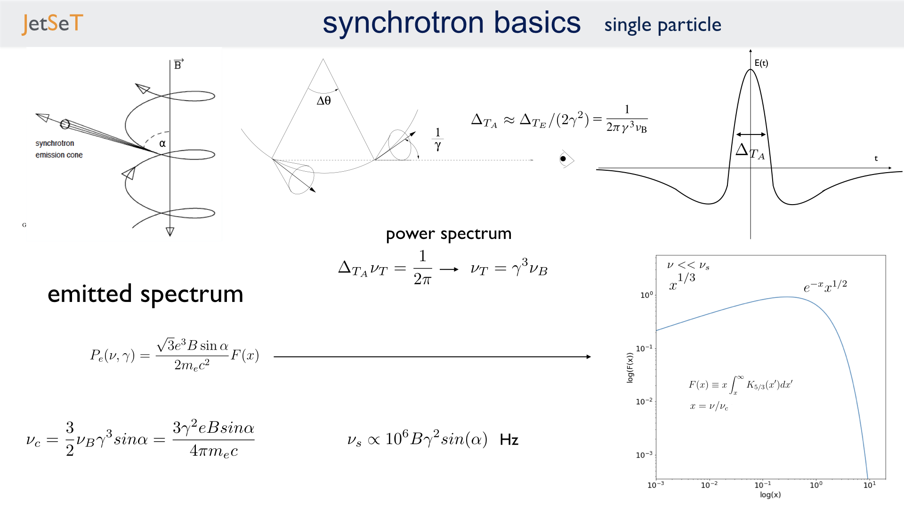
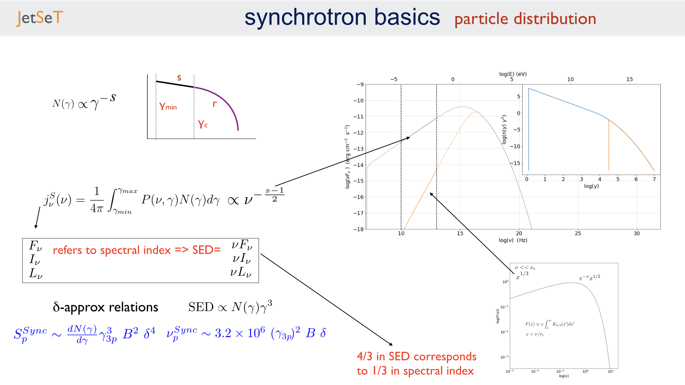
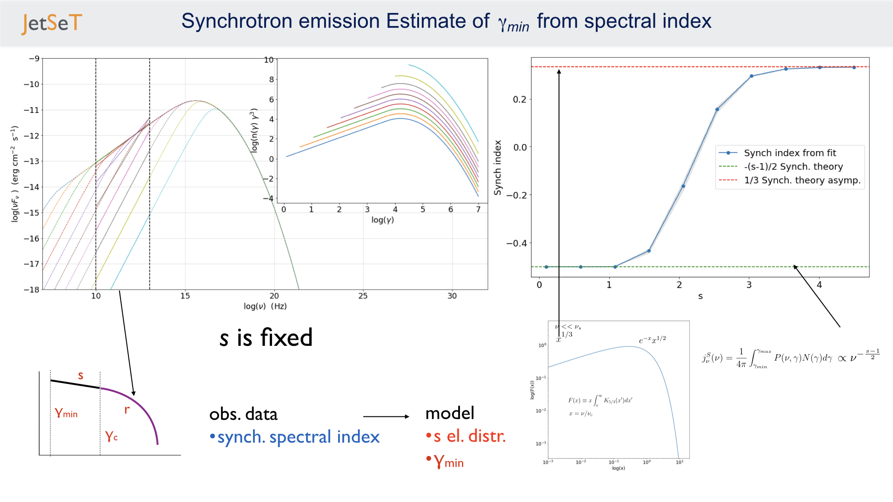
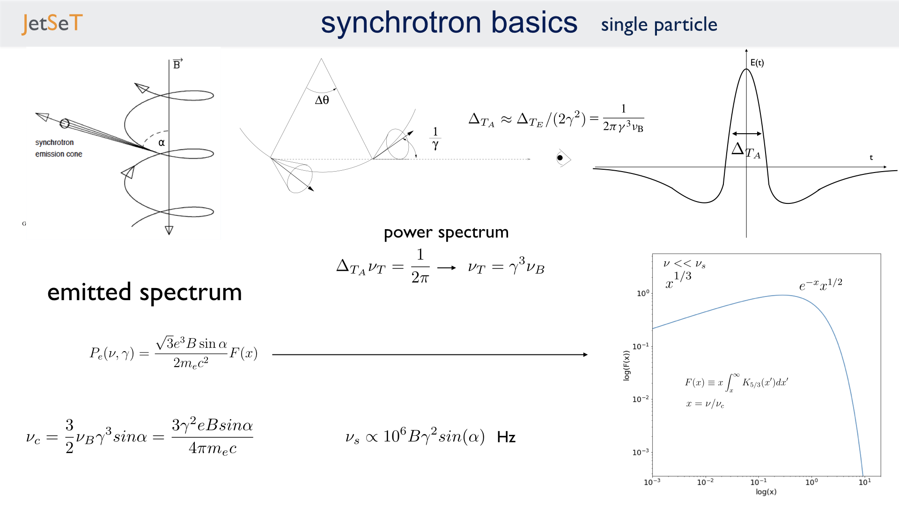
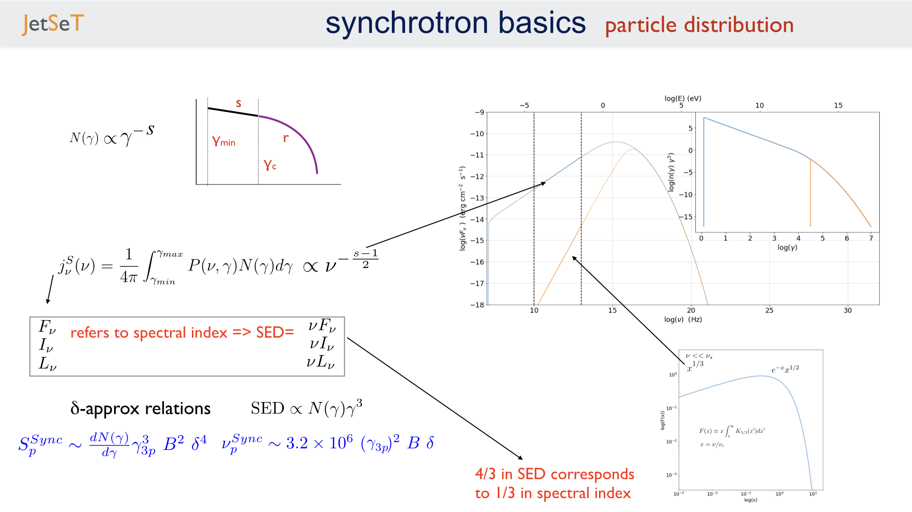
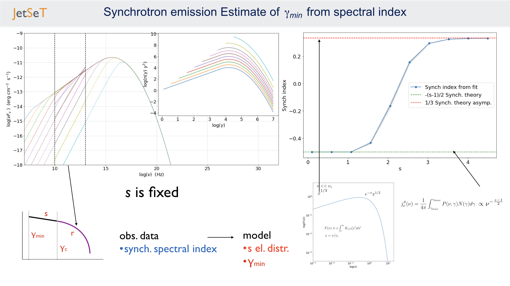

Phenomenological model constraining: SSC theory#
import jetset
print('tested on jetset',jetset.__version__)
tested on jetset 1.3.0rc7
import matplotlib
from matplotlib import pyplot as plt
import matplotlib.colors as mcolors
font = {'family' : 'sans-serif',
'weight' : 'normal',
'size' : 18}
matplotlib.rc('font', **font)
matplotlib.pyplot.rc('font', **font)
colors=list(mcolors.TABLEAU_COLORS)
import numpy as np
import warnings
warnings.filterwarnings('ignore')
from jetset.poly_fit_tools import get_SED_pl_fit, get_SED_log_par_fit, get_nu_p_S_delta_approx, get_n_gamma_log_par_fit, get_nu_p_S_delta_approx
def n_distr_plot(j,ax,c=None,gmin=None):
x=j.electron_distribution.gamma_e
y=j.electron_distribution.n_gamma_e
ax.plot(np.log10(x),np.log10(y*x*x*x),color=c)
if gmin is not None:
ymax=np.log10(y[0]*x[0]*x[0]*x[0])
ymin=np.log10(y[-1]*x[-1]*x[-1]*x[-1])
ax.vlines(np.log10(gmin),ymin=ymin,ymax=ymax,color=c)
This section is based on the work presented in
Tramacere et al. (2009) [Tramacere2009]
Massaro et al. (2006) [Massaro2006]
Jones (1968) [Jones1968]
Blumenthal & Gould (1970) [BG1970]
Rybicki & Lightman (1986) [RL1986]

image.png#
from jetset.plot_sedfit import PlotSED,PlotPdistr,PlotSpecComp
from jetset.jet_model import Jet
my_jet=Jet(electron_distribution='lppl')
my_jet.parameters.r.val=1.0
my_jet.show_model()
===> setting C threads to 12
--------------------------------------------------------------------------------
model description:
--------------------------------------------------------------------------------
type: Jet
name: jet_leptonic
geometry: spherical
electrons distribution:
type: lppl
gamma energy grid size: 201
gmin grid : 2.000000e+00
gmax grid : 1.000000e+06
normalization: True
log-values: False
ratio of cold protons to relativistic electrons: 1.000000e+00
radiative fields:
seed photons grid size: 100
IC emission grid size: 100
source emissivity lower bound : 1.000000e-120
spectral components:
name:Sum, state: on
name:Sum, hidden: False
name:Sync, state: self-abs
name:Sync, hidden: False
name:SSC, state: on
name:SSC, hidden: False
external fields transformation method: blob
SED info:
nu grid size jetkernel: 1000
nu size: 500
nu mix (Hz): 1.000000e+06
nu max (Hz): 1.000000e+30
flux plot lower bound : 1.000000e-30
--------------------------------------------------------------------------------
| model name | name | par type | units | val | phys. bound. min | phys. bound. max | log | frozen |
|---|---|---|---|---|---|---|---|---|
| jet_leptonic | R | region_size | cm | 5.000000e+15 | 1.000000e+03 | 1.000000e+30 | False | False |
| jet_leptonic | R_H | region_position | cm | 1.000000e+17 | 0.000000e+00 | -- | False | True |
| jet_leptonic | B | magnetic_field | gauss | 1.000000e-01 | 0.000000e+00 | -- | False | False |
| jet_leptonic | NH_cold_to_rel_e | cold_p_to_rel_e_ratio | 1.000000e+00 | 0.000000e+00 | -- | False | True | |
| jet_leptonic | beam_obj | beaming | 1.000000e+01 | 1.000000e-04 | -- | False | False | |
| jet_leptonic | z_cosm | redshift | 1.000000e-01 | 0.000000e+00 | -- | False | False | |
| jet_leptonic | gmin | low-energy-cut-off | lorentz-factor* | 2.000000e+00 | 1.000000e+00 | 1.000000e+09 | False | False |
| jet_leptonic | gmax | high-energy-cut-off | lorentz-factor* | 1.000000e+06 | 1.000000e+00 | 1.000000e+15 | False | False |
| jet_leptonic | N | emitters_density | 1 / cm3 | 1.000000e+02 | 0.000000e+00 | -- | False | False |
| jet_leptonic | gamma0_log_parab | turn-over-energy | lorentz-factor* | 1.000000e+04 | 1.000000e+00 | 1.000000e+09 | False | False |
| jet_leptonic | s | LE_spectral_slope | 2.000000e+00 | -1.000000e+01 | 1.000000e+01 | False | False | |
| jet_leptonic | r | spectral_curvature | 1.000000e+00 | -1.500000e+01 | 1.500000e+01 | False | False |
--------------------------------------------------------------------------------
my_jet.set_par('B',val=0.2)
my_jet.set_par('gamma0_log_parab',val=5E3)
my_jet.set_par('gmin',val=1E2)
my_jet.set_par('gmax',val=1E8)
my_jet.set_par('R',val=1E15)
my_jet.set_par('N',val=1E3)
my_jet.set_par('r',val=0.4)
my_jet.eval()
p=my_jet.electron_distribution.plot()
my_jet.set_par('r',val=2.4)
my_jet.eval()
p=my_jet.electron_distribution.plot(p=p)
p.ax.axvline(my_jet.parameters.gamma0_log_parab.val,ls='--',c='black',label=r'$\gamma_0$')
p.setlim(y_min=1E-20)
p.ax.legend()
<matplotlib.legend.Legend at 0x151f07bb0>

p=my_jet.electron_distribution.plot3p()
p.ax.axvline(4.0,ls='--',c='black',label=r'$\gamma_0$')
p.ax.legend()
<matplotlib.legend.Legend at 0x152a7af80>

my_plot=my_jet.plot_model()
my_plot.setlim(y_max=1E-11,y_min=3E-17,x_min=1E9)
my_plot=my_jet.plot_model(frame='src')
my_plot.setlim(y_max=1E44,y_min=1E38,x_min=1e9)

Synchrotron trends: full computation and \(\delta\)-approx comparison#

   
  
Synchrotron trend for \(\gamma_{min}\)#
#matplotlib.rc('font', **font)
my_jet=Jet(electron_distribution='lppl')
p=PlotSED(figsize=(18,12))
ax=p.fig.add_subplot(222)
my_jet.parameters.gmax.val=1E7
my_jet.parameters.r.val=1.0
my_jet.parameters.s.val=2.0
my_jet.parameters.N.val=500
my_jet.parameters.z_cosm.val=0.05
my_jet.nu_grid_size=500
my_jet.set_gamma_grid_size(100)
my_jet.set_IC_nu_size(100)
size=10
#Synch
nu_p_S=np.zeros(size)
nuFnu_p_S=np.zeros(size)
S_index=np.zeros(size)
S_index_err=np.zeros(size)
#Switch off SSC emission
my_jet.spectral_components.SSC.state='off'
#Switch off sych self-abs
my_jet.spectral_components.Sync.state='on'
gmin_values=np.logspace(0.1,4.5,size)
for ID,gmin in enumerate(gmin_values):
my_jet.parameters.gmin.val=gmin
my_jet.set_N_from_nuFnu(nu_obs=1E18,nuFnu_obs=1E-12)
my_jet.eval()
x_p,y_p=my_jet.get_component_peak('Sync',log_log=True)
S_index[ID],S_index_err[ID],loglog_pl=get_SED_pl_fit(my_jet,'Sync',[10,13])
my_jet.plot_model(p,label=r'$\gamma_{min}$=%2.2e'%gmin,color=colors[ID],auto_label=False,comp='Sync',line_style='--')
p.add_model_plot(loglog_pl,label=r'pl fit for $\gamma_{min}$=%2.2e'%gmin,color=colors[ID],line_style='-')
n_distr_plot(my_jet,ax,c=colors[ID],gmin=gmin)
ax.set_xlabel(r'log($\gamma$)')
ax.set_ylabel(r'log(n($\gamma$) $\gamma^3$)')
p.sedplot.axvline([10],ls='--',c='black')
p.sedplot.axvline([13],ls='--',c='black')
p.sedplot.scatter(nu_p_S,nuFnu_p_S)
p.setlim(y_min=1E-18,y_max=1E-9,x_min=1E7,x_max=1E32)
===> setting C threads to 12
S_spectral_index=S_index-1
matplotlib.rc('font', **font)
fig = plt.figure(figsize=(12,8))
ax=fig.add_subplot(111)
ax.plot(np.log10(gmin_values),S_spectral_index,'-o',label=r'Synch index from fit')
ax.fill_between(np.log10(gmin_values), S_spectral_index - S_index_err, S_spectral_index + S_index_err,
color='gray', alpha=0.2)
ax.set_ylabel('Synch index')
ax.set_xlabel(r'log($\gamma_{min}$)')
ax.axhline(-(my_jet.parameters.s.val-1)/2,ls='--',c='green',label='-(s-1)/2 Synch. theory')
ax.axhline(1/3,ls='--',c='red',label='1/3 Synch. theory asymp.')
ax.legend()
<matplotlib.legend.Legend at 0x150f9f4c0>

Synchrotron trend for the low-energy spectral slope#

image.png#
matplotlib.rc('font', **font)
p=PlotSED(figsize=(18,12))
ax=p.fig.add_subplot(222)
my_jet.parameters.gmax.val=1E7
my_jet.parameters.gmin.val=2
my_jet.parameters.r.val=1.0
my_jet.parameters.s.val=2.0
my_jet.parameters.N.val=500
my_jet.parameters.z_cosm.val=0.05
my_jet.nu_grid_size=500
my_jet.set_gamma_grid_size(100)
my_jet.set_IC_nu_size(100)
size=10
#Synch
nu_p_S=np.zeros(size)
nuFnu_p_S=np.zeros(size)
S_index=np.zeros(size)
S_index_err=np.zeros(size)
#Switch off SSC emission
my_jet.spectral_components.SSC.state='off'
#Switch off sych self-abs
my_jet.spectral_components.Sync.state='on'
s_values=np.linspace(1.5,2.5,size)
for ID,s in enumerate(s_values):
my_jet.parameters.s.val=s
my_jet.set_N_from_nuFnu(nu_obs=5E13,nuFnu_obs=1E-11)
my_jet.eval()
x_p,y_p=my_jet.get_component_peak('Sync',log_log=True)
S_index[ID],S_index_err[ID],loglog_pl=get_SED_pl_fit(my_jet,'Sync',[10,13])
my_jet.plot_model(p,label=r'$\gamma_{min}$=%2.2e'%gmin,color=colors[ID],auto_label=False,comp='Sync',line_style='--')
p.add_model_plot(loglog_pl,label=r'pl fit for $\gamma_{min}$=%2.2e'%gmin,color=colors[ID],line_style='-')
n_distr_plot(my_jet,ax,c=colors[ID])
ax.set_xlabel(r'log($\gamma$)')
ax.set_ylabel(r'log(n($\gamma$) $\gamma^3$)')
p.sedplot.axvline([10],ls='--',c='black')
p.sedplot.axvline([13],ls='--',c='black')
p.sedplot.scatter(nu_p_S,nuFnu_p_S)
p.setlim(y_min=1E-18,y_max=1E-9,x_min=1E7,x_max=1E34)

S_spectral_index=S_index-1
matplotlib.rc('font', **font)
fig = plt.figure(figsize=(12,8))
ax=fig.add_subplot(111)
ax.plot(s_values,S_spectral_index,'-o',label=r'Synch index from fit')
ax.fill_between(s_values, S_spectral_index - S_index_err, S_spectral_index + S_index_err,
color='gray', alpha=0.2)
ax.set_ylabel('Synch index')
ax.set_xlabel(r's')
ax.plot(s_values,-(s_values-1)/2,ls='--',c='green',label='-(s-1)/2 Synch. theory')
ax.legend()
<matplotlib.legend.Legend at 0x15274b430>

Change in the peak frequency of the SED#
image.png#
matplotlib.rc('font', **font)
p=PlotSED(figsize=(18,12))
ax=p.fig.add_subplot(222)
my_jet.parameters.gmax.val=1E8
my_jet.parameters.r.val=1.0
my_jet.parameters.s.val=2.0
my_jet.parameters.N.val=500
my_jet.parameters.z_cosm.val=0.05
size=10
#Synch
nu_p_S=np.zeros(size)
nuFnu_p_S=np.zeros(size)
nu_p_S_delta=np.zeros(size)
#e- distr
g_p_e=np.zeros(size)
n3g_p_e=np.zeros(size)
#Switch off SSC emission
my_jet.spectral_components.SSC.state='off'
for ID,gamma0_log_parab in enumerate(np.logspace(2.5,4,size)):
my_jet.nu_grid_size=100
my_jet.set_gamma_grid_size(200)
my_jet.parameters.gamma0_log_parab.val=gamma0_log_parab
my_jet.eval()
x_p,y_p=my_jet.get_component_peak('Sync',log_log=True)
(nu_p_S[ID],nuFnu_p_S[ID],_),err=get_SED_log_par_fit(x_p,y_p,my_jet,'Sync')
my_jet.electron_distribution.update()
pars,err=get_n_gamma_log_par_fit(my_jet.electron_distribution,power=3,delta_p=[-0.25,0.25])
g_p_e[ID] = pars[0]
n3g_p_e[ID] = pars[1]
nu_p_S_delta[ID]=get_nu_p_S_delta_approx(my_jet,g_p_e[ID])
my_jet.plot_model(p,label=r'$\gamma 0$=%2.2e'%gamma0_log_parab,color=colors[ID],auto_label=False,comp='Sync')
n_distr_plot(my_jet,ax,c=colors[ID])
ax.set_xlabel(r'log($\gamma$)')
ax.set_ylabel(r'log(n($\gamma$) $\gamma^3$)')
p.sedplot.scatter(nu_p_S,nuFnu_p_S)
ax.scatter(g_p_e,n3g_p_e)
p.setlim(y_min=1E-18,y_max=1E-11,x_min=1E9,x_max=1E30)
ax.set_ylim(2,9)
(2, 9)

matplotlib.rc('font', **font)
fig = plt.figure(figsize=(12,8))
ax=fig.add_subplot(111)
ax.plot(nu_p_S,10**(nu_p_S - nu_p_S_delta),'-o',label=r'$\nu_p$ S from $\delta$-approx / $\nu_p$ S peak from SED fit')
ax.set_ylabel('ratio')
ax.set_xlabel(r'log($\gamma_{3p}$ e-)')
#ax.axvline(4.0,ls='--',c='black')
ax.axhline(1.0,ls='--',c='red')
ax.legend(fontsize='large',loc='best')
ax.set_ylim(0,1.5)
(0, 1.5)

Trends for the inverse Compton and synchrotron emission#

image.png#
Changing \(\gamma_{min}\)#
matplotlib.rc('font', **font)
p=PlotSED(figsize=(12,9))
my_jet=Jet(electron_distribution='lppl')
my_jet.parameters.gmax.val=1E8
my_jet.parameters.r.val=1.0
for ID,gmin in enumerate([10,5000,10000]):
my_jet.set_gamma_grid_size(200)
my_jet.set_IC_nu_size(100)
my_jet.parameters.gmin.val=gmin
my_jet.set_N_from_nuFnu(nu_obs=1E17,nuFnu_obs=1E-13)
my_jet.eval()
my_jet.plot_model(p,label='gmin=%2.2e'%gmin,color=colors[ID])
===> setting C threads to 12
Changing the turn-over energy#
my_jet=Jet(electron_distribution='lppl')
matplotlib.rc('font', **font)
p=PlotSED(figsize=(12,9))
my_jet.parameters.gmax.val=1E8
my_jet.parameters.r.val=1.0
my_jet.parameters.s.val=2.0
my_jet.parameters.N.val=500
my_jet.parameters.z_cosm.val=0.05
my_jet.nu_grid_size=1000
my_jet.set_gamma_grid_size(200)
my_jet.set_IC_nu_size(100)
for ID,gamma0_log_parab in enumerate(np.logspace(3,5,5)):
my_jet.parameters.gamma0_log_parab.val=gamma0_log_parab
my_jet.eval()
my_jet.plot_model(p,label='gammma_0=%2.2e'%gamma0_log_parab,color=colors[ID])
p.setlim(y_min=1E-20,y_max=1E-11,x_min=1E9)
===> setting C threads to 12
The IC redistribution function#

image.png#
from jetset.jetkernel import jetkernel
def eval_nu_min_max(nu_compton_0,g):
epsilon_0 = jetkernel.HPLANCK * nu_compton_0*jetkernel.one_by_MEC2
nu_1_max = 4.0 * nu_compton_0 * g*g / (1.0 + 4.0*g*epsilon_0)
nu_1_min = nu_compton_0/(4.0*g*g)
Gamma=4*nu_compton_0*g*jetkernel.one_by_MEC2*jetkernel.HPLANCK
return nu_1_min, nu_1_max,Gamma
# Compare with fig. 4 in BLUMENTHAL, GEORGE R. GOULD, ROBERT J. 1970
# https://ui.adsabs.harvard.edu/abs/1970RvMP...42..237B/abstract
plt.figure(figsize=(10,8))
my_jet=Jet()
nu_0=1E15
size=1000
rate=np.zeros(size)
my_jet._blob.do_IC_down_scattering=1
for g in [1E1,1E4,1E5,3E5,3E6]:
nu_1_min,nu_1_max,Gamma=eval_nu_min_max(nu_0,g)
nu_1_range=np.linspace( nu_1_min , nu_1_max,size)
rate=np.zeros(size)
for ID,nu_1 in enumerate(nu_1_range):
my_jet._blob.nu_compton_0=nu_0
my_jet._blob.nu_1=nu_1
try:
rate[ID]=jetkernel.f_compton_K1(my_jet._blob,g)
except:
rate[ID]=jetkernel.f_compton_K1(my_jet._blob,g,nu_1,nu_0)
x=nu_1_range/nu_1_max
y=rate
c=np.trapz(y,x)
plt.plot(x, rate/c,label=r'$\Gamma=%2.2e$'%(Gamma))
plt.axvline(1.0,ls='--',lw=0.5)
plt.legend()
plt.xlabel(r'$\nu_{out}/\nu_{out max}$')
plt.ylabel(r'$Fc(\nu_{out},\nu_{in},\gamma)$')
===> setting C threads to 12

plt.figure(figsize=(10,8))
x=np.logspace(0,8,1000)
_,y,_=eval_nu_min_max(1E15,x)
plt.loglog(x,jetkernel.HPLANCK*y*jetkernel.one_by_MEC2/x)
plt.xlabel(r'${\gamma_e}$')
plt.ylabel(r'$\frac{h\nu_{out}}{\gamma_e m_ec^2}$')
Text(0, 0.5, '$\frac{h\nu_{out}}{\gamma_e m_ec^2}$')

Transition from TH to KN regime for the IC emission: changing the curvature in the high-enegy branch of the emitters#

image.png#
my_jet=Jet(electron_distribution='lppl')
matplotlib.rc('font', **font)
p=PlotSED(figsize=(12,9))
pe=PlotPdistr()
pe.fig.set_size_inches(8,6)
my_jet.parameters.gmax.val=1E8
my_jet.parameters.gamma0_log_parab.val=5E3
my_jet.parameters.B.val=.5
my_jet.nu_max=1E30
my_jet.set_gamma_grid_size(100)
my_jet.set_IC_nu_size(100)
size=10
nu_p_S=np.zeros(size)
nu_p_IC=np.zeros(size)
nuFnu_p_S=np.zeros(size)
nuFnu_p_IC=np.zeros(size)
r_S=np.zeros(size)
r_S_err=np.zeros(size)
r_IC=np.zeros(size)
r_IC_err=np.zeros(size)
r_values=np.linspace(2.0,0.5,size)
for ID,r in enumerate(r_values):
my_jet.parameters.r.val=r
my_jet.set_N_from_nuFnu(nu_obs=1E10,nuFnu_obs=1E-14)
my_jet.eval()
my_jet.plot_model(p,label='r=%2.2e'%r,color=colors[ID])
x_p,y_p=my_jet.get_component_peak('Sync',log_log=True)
(nu_p_S[ID],nuFnu_p_S[ID],r_S[ID]),err=get_SED_log_par_fit(x_p,y_p,my_jet,'Sync',delta_p=[0,1])
r_S_err[ID]=err[2]
x_p,y_p=my_jet.get_component_peak('SSC',log_log=True)
(nu_p_IC[ID],nuFnu_p_IC[ID],r_IC[ID]),err=get_SED_log_par_fit(x_p,y_p,my_jet,'SSC',delta_p=[0,1])
r_IC_err[ID]=err[2]
my_jet.electron_distribution.plot3p(pe,label='r=%2.2f'%r)
p.setlim(y_min=1E-14,y_max=3E-10,x_min=1E10,x_max=1E29)
pe.setlim(y_min=0)
===> setting C threads to 12


the following plot shows the trend for the S curvature (b) and the IC curvature (both measured over one decade starting from the peak) versus the curvature of the electron distribution (r)
fig = plt.figure(figsize=(12,8))
ax=fig.add_subplot(111)
ax.errorbar(r_values,r_S,yerr=r_S_err,fmt='-o',label='S curvature')
ax.fill_between(r_values, r_S - r_S_err, r_S + r_S_err,
color='gray', alpha=0.2)
ax.errorbar(r_values,r_IC,yerr=r_IC_err,fmt='-o',label='IC curvature')
ax.fill_between(r_values, r_IC - r_IC_err, r_IC + r_IC_err,
color='gray', alpha=0.2)
ax.plot(r_values,-r_values/5, label='b = r/5')
ax.set_ylabel('spectral curvature')
ax.set_xlabel(r'e- curvature r')
#ax.axvline(,ls='--',c='black')
#ax.axhline(-0.2,ls='--',c='red',label='sync theor. b~r/5')
ax.legend(fontsize='large')
<matplotlib.legend.Legend at 0x15363db40>

Transition from TH to KN regime for the IC emission: changing the turnover energy#

image.png#
my_jet=Jet(electron_distribution='lppl')
my_jet._blob.IC_adaptive_e_binning=0
matplotlib.rc('font', **font)
p=PlotSED(figsize=(12,9))
size=10
my_jet.parameters.gmax.val=1E8
my_jet.parameters.r.val=1.0
my_jet.parameters.s.val=2.0
my_jet.parameters.N.val=500
my_jet.parameters.z_cosm.val=0.05
my_jet.nu_grid_size=200
my_jet.set_gamma_grid_size(200)
my_jet.set_IC_nu_size(200)
my_jet.set_seed_nu_size(100)
nu_p_S=np.zeros(size)
nu_p_IC=np.zeros(size)
nuFnu_p_S=np.zeros(size)
nuFnu_p_IC=np.zeros(size)
r_S=np.zeros(size)
r_S_err=np.zeros(size)
r_IC=np.zeros(size)
r_IC_err=np.zeros(size)
g_p_e=np.zeros(size)
n3g_p_e=np.zeros(size)
#colors=list(mcolors.CSS4_COLORS)
for ID,gamma0_log_parab in enumerate(np.logspace(2.5,5,size)):
my_jet.parameters.gamma0_log_parab.val=gamma0_log_parab
my_jet._blob.IC_adaptive_e_binning=0
my_jet._blob.do_IC_down_scattering=0
my_jet.eval()
p=my_jet.plot_model(p,comp='Sum',label='$\gamma0$_log_parab = %2.2e'%gamma0_log_parab)
#with log_log=True, the values are already logarthmic
x_p,y_p=my_jet.get_component_peak('Sync',log_log=True)
(nu_p_S[ID],nuFnu_p_S[ID],r_S[ID]),err=get_SED_log_par_fit(x_p,y_p,my_jet,'Sync', delta_p=[0,1])
r_S_err[ID]=err[2]
p.sedplot.plot(10**x_p,10**y_p,'o',c='blue')
x_p,y_p=my_jet.get_component_peak('SSC',log_log=True)
(nu_p_IC[ID],nuFnu_p_IC[ID],r_IC[ID]),err=get_SED_log_par_fit(x_p,y_p,my_jet,'SSC', delta_p=[0,1])
r_IC_err[ID]=err[2]
pars,err=get_n_gamma_log_par_fit(my_jet.electron_distribution,power=3,delta_p=[-0.5,0.5])
g_p_e[ID] = pars[0]
n3g_p_e[ID] = pars[1]
p.sedplot.plot(10**x_p,10**y_p,'o',c='orange')
p.setlim(y_min=1E-18,y_max=3E-11,x_min=1E9)
p.sedplot.scatter(nu_p_S,nuFnu_p_S)
p.sedplot.scatter(nu_p_IC,nuFnu_p_IC)
===> setting C threads to 12
<matplotlib.collections.PathCollection at 0x1537e4550>

matplotlib.rc('font', **font)
fig = plt.figure(figsize=(12,8))
ax=fig.add_subplot(111)
ax.plot(g_p_e,(nu_p_IC-nu_p_S)-2*g_p_e,'-o')
ax.set_ylabel(r'log($ \frac{(\nu_p^{IC} / \nu_p^{S})}{\gamma_{3p}^2} $)''')
ax.set_xlabel(r'log($\gamma_{3p}$ e-)')
ax.axvline(4.0,ls='--',c='black')
ax.axhline(np.log10(4/3),ls='--',c='red',label=r"$ \frac{(\nu_p^{IC} / \nu_p^{S})}{\gamma_{3p}^2} =4/3 $")
ax.legend(fontsize='large',loc='lower left')
<matplotlib.legend.Legend at 0x1524fac50>

fig = plt.figure(figsize=(12,8))
ax=fig.add_subplot(111)
ax.errorbar(g_p_e,r_S,yerr=r_S_err,fmt='-o',label='S')
ax.fill_between(g_p_e, r_S - r_S_err, r_S + r_S_err,
color='gray', alpha=0.2)
ax.errorbar(g_p_e,r_IC,yerr=r_IC_err,fmt='-o',label='IC')
ax.fill_between(g_p_e, r_IC - r_IC_err, r_IC + r_IC_err,
color='gray', alpha=0.2)
ax.set_ylabel('spectral curvature')
ax.set_xlabel(r'log($\gamma_{3p}$ e-)')
ax.axvline(4.0,ls='--',c='black')
ax.axhline(-0.2,ls='--',c='red',label='sync theor. b~r/5')
ax.legend(fontsize='large')
<matplotlib.legend.Legend at 0x1534e2aa0>

Exercise#
derive the trend for the Compton dominance (CD) as a function of N a gamma0_log_parab
hint: use the get_component_peak to extract the peak of the SED for each component